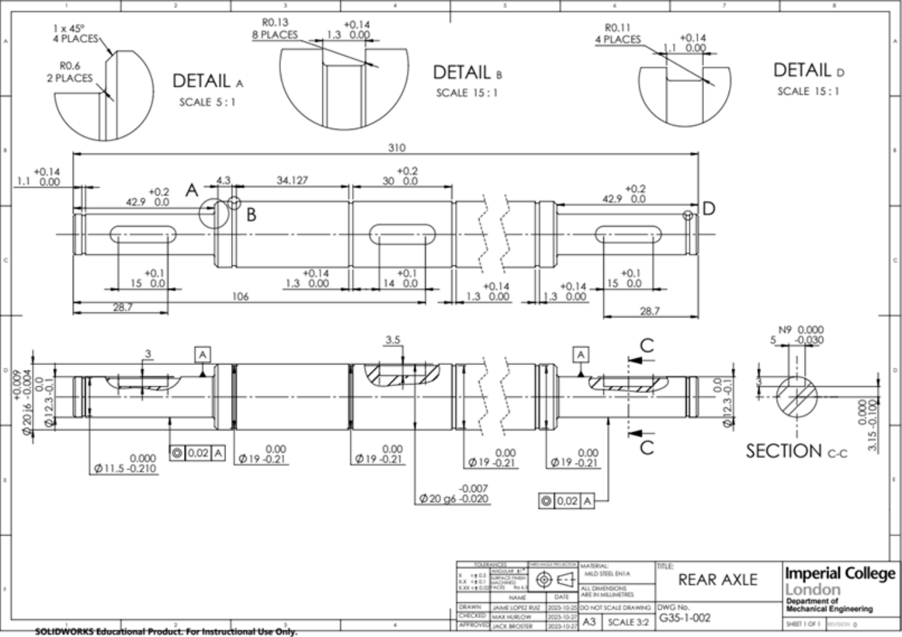
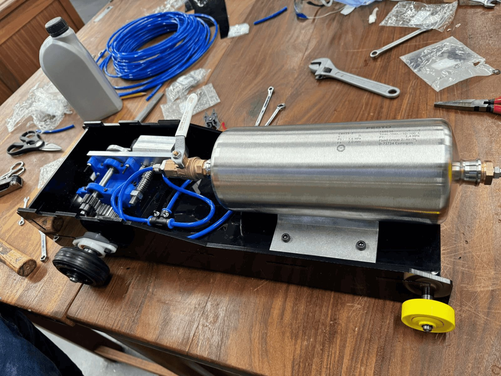

← Projects · ⌖ Mech sheet · Design and Manufacture, Imperial, Oct – Dec 2023
Air-powered
model car
A model car driven by compressed air through an oscillating piston engine, designed and machined in-house by a team of five. I was the drivetrain lead.
Section B-B · Concept
Jet propulsion was ruled out early: the tank would empty in about a second. A turbine was beyond the scope of the module. An oscillating (wobbler) engine turns pressure into rotation with very few parts.
| Requirement | Value |
| Supply pressure | 5.5 bar gauge |
| Track length | 20–25 m |
| Height | ≤ 500 mm |
| Width | ≤ 400 mm |
Section C-C · Drivetrain, my scope
Engine torque T = PAr = 2.83 N·m, at 6 bar on a 3.14 × 10⁻⁴ m² piston with a 15 mm crank radius. Plastic gears failed the Lewis bending check, needing far too wide a face, so I specified steel spur gears. The 48:15 ratio gives about 9 N·m at the axle with no losses; I sized the bearings on a pessimistic 1.8 N·m.
| Gear | Teeth | Pitch diameter | Min. face width (Lewis) |
| Pinion, steel, RS 5216402 | 15 | 22.5 mm | 14.1 mm |
| Wheel, steel, RS 1827847 | 48 | 72 mm | 9.5 mm |


Documents
| Document | File |
| Design report | Report ↗ |